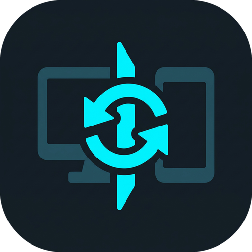

SyncroUmbral bloquea Windows cuando te alejas con tu móvil Android y lo desbloquea cuando vuelves. Además comparte archivos, galería, notificaciones, llamadas y SMS. Todo por tu red local, sin nube ni cuentas.
Beta 0.6.0 · Windows 10/11 de 64 bits y Android · Software libre (GPL-3.0)
Si el móvil se aleja o se desconecta, el PC se bloquea. Si vuelve, se desbloquea. Sin móvil, tienes una clave de respaldo.
Entra en las carpetas del móvil y del PC, elige los archivos exactos y envíalos en cualquier dirección.
Mira las fotos del móvil desde el PC por álbumes y tráete las que quieras.
Recibe y responde las notificaciones del móvil en el PC y pasa texto de un equipo al otro.
Consulta contactos y llamadas, marca desde el PC y lee y envía SMS.
Interfaz nativa en Rust, sin WebView: un solo proceso y unos 8 MB de memoria.
Guía completa: instalación.
El PC y el móvil hablan directamente por tu red local. No hay servidores del autor ni cuentas.
Conexión TLS fijada al certificado de tu PC y firma con una clave que no sale del móvil.
El código es público. Lee el análisis de seguridad con lo corregido y lo pendiente.
Los ejecutables de Windows se compilan en GitHub Actions a partir del código público y se firman con un certificado gratuito de SignPath Foundation (solicitud en trámite). El propietario del repositorio autoriza cada firma. La actualización automática verifica además una firma propia (ECDSA P-256) de la lista de huellas SHA-256 de cada versión.
Privacidad: el programa no envía datos al autor. Solo se comunica con tu móvil por la red local y consulta las publicaciones de GitHub para buscar actualizaciones.